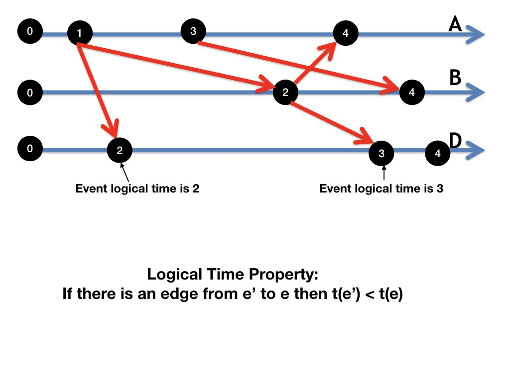

A logical clock algorithm assigns a value, called the logical time,
to each event in a computation so that all edges in the dataflow of
the computation are from lower to higher logical times.
The Logical Time Property
The logical clock algorithm assigns a value \(t(e)\) to each event
\(e\) of a computation so that:
For all edges \((e, e')\) of the dataflow graph of the computation:
\(t(e) < t(e')\).
Example: Logical Times of Events
Figure 1 shows an event graph of a computation in which the numbers
of vertices are the logical times of corresponding events.
Every edge is directed from a lower to a higer logical time.

Fig. 1: Logical Times of Events
Consequences of the Logical Time Property
Sequences of events in increasing logical time are computations.
For all \(t\), the state at the set of events with
logical times at most \(t\) is a global snapshot.
Proof
Sequences of events in increasing logical time are topological sorts
of dataflow and are therefore computations.
All edges to events with logical time at most \(t\) are from events
with logical time at most \(t\). So the set \(H\) of events with
logical time at most \(t\) is input closed, and therefore the state
at \(H\) is a global state.
Global Snapshots at Logical Time \(t\)
Agents determine the state at the set of events with logical
time at most \(t\) as follows.
Agent states: Each agent records its local state after an
event with logical time at most \(t\) and before an
events with logical time greater than \(t\).
Channel states: An agent records the state of an input
channel \(c\) as the sequence of messages with timestamps
\(t\) or less, received on \(c\), at events with logical
time greater than \(t\).
The above algorithm for taking the global snapshot at logical time \(t\)
is exactly the same as the algorithm for taking the global snapshot at
real time \(t\), when the time at each agent's clock is the real time.
We highlight this observation because we use it to design algorithms.
Observation: Logical Clocks and Real Time Clocks
The algorithms to determine the global states at logical time \(t\)
and real time \(t\) are identical.
A Logical Clock Algorithm
The following algorithm ensures that the value \(t(e)\) assigned to
event \(e\) satisfies the logical time property.
Let \(e'\) be the event immediately preceding event \(e\) at an
agent.
A message sent in an event \(e\) is assigned a timestamp \(t(e)\).
If the timestamp of the message received in \(e\) is \(T\) then set
\(t(e)\) to any value greater than max(t(e'), T).
Logically Synchronized Clocks
Many distributed systems maintain accurate -- but not perfect --
clocks by using atomic clocks and Precision or Network Time Protocols (PTP, NTP).
These systems do not, however, guarantee the logical time property
because clocks are not perfectly synchronized.
Agents use the logical clock algorithm, if necessary, to modify
their clocks so that their clocks are accurate and have the logical
time property.
We call such clocks logically synchronized.
We represent each clock tick of an agent's clock as a message from the agent to
itself.
Logically synchronized clocks have two valuable
properties.
Clocks tick forward: For all \(t\), there is a point in
an infinite computation at which all agent clocks exceed \(t\).
Global snapshots at \(t\): For all \(t\), local snapshots taken by agents
when the agent clocks are at time \(t\) are global snapshots.
We use these properties in several algorithms.
For example, the simplest way to take repeated snapshots is for agents to record
states periodically with some period \(T\), i.e., when local clocks are at
multiples of \(T\).